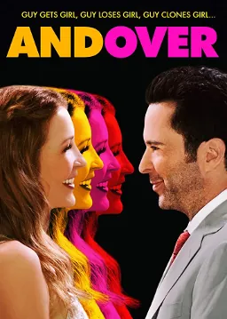

The genetics
Human cloning drives this romantic comedy, and the scientist is its protagonist: a genetics professor who uses his laboratory to bring back his dead wife. The film is largely about the limits of genetic determinism. Each clone of Dawn shares her genome but develops a different personality depending on who raises her and what she experiences, and only the clone brought up by Dawn's own parents comes close to the original, even then without her feelings for Adam. The film presents Adam's quest as an obsession that leads him to kill his "faulty" clones, while his student Emma regrets that he is not using his research to help others, though she too misuses cloning for personal ends. Accelerated growth from baby to adult within months is fiction, but the central idea, that a clone would be a separate person shaped by its own upbringing, is consistent with real biology.
The story
Adam Slope, a genetics professor, marries Dawn, a free-spirited glass artist, and they take out large life insurance policies on each other. When Dawn dies in a fire at her studio, the grieving Adam uses hairs from her hairbrush to clone her in his lab, helped by his graduate student Emma. The clones are born as babies and age to adulthood within a few months, but none of them looks and behaves exactly like the original Dawn, and Adam kills each one that falls short, including one who falls in love with her high-school boyfriend. Emma, who loves Adam, secretly clones him. A suspicious insurance investigator uncovers the clones and tries to blackmail Adam, who poisons and clones him too. Finally Dawn's parents raise a clone as they raised their daughter; she becomes like the original but does not love Adam. Adam gives up, ends up with Emma, and the cloned Adam and Dawn fall in love and marry.